Manuales de usoControl de Inserción de Trama para un Vamatex C 201
Dos manuales complementarios. El primero explica el uso de la aplicación paso a paso, desde el ingreso hasta la ejecución de un dibujo. El segundo describe la máquina intervenida, qué se le modificó y cómo se la opera en el taller. Cada uno abre con una guía de inicio rápido.
Guía de inicio rápido
Entrar a la dirección del sistema desde el navegador. Conviene agregarla a la pantalla de inicio del celular para tenerla a mano.
Escribir el nombre de usuario y tocar "Entrar con huella dactilar". El teléfono pide apoyar el dedo.
Ir a Editor, definir cuántas filas y columnas tiene el dibujo y tocar Aplicar. Después tocar las celdas: cada fila es una pasada del telar y cada columna un elemento que se activa.
Ponerle un nombre al dibujo y tocar Guardar. Con el dibujo cargado, el botón de reproducción arranca el telar.
- La botonera del telar sigue funcionando siempre. La aplicación no la reemplaza: se suma.
- Si se corta la conexión, el sistema no acciona nada y el telar queda como estaba.
- Los dibujos que ya se usaron para tejer no se pueden borrar, porque quedaron registrados en el historial de producción.
Explicación completa, paso a paso, de cómo se usa la aplicación web de control del telar: la secuencia de operaciones, qué hace cada pantalla y qué significa cada botón. Cada sección incluye las capturas de la aplicación tal como se ve hoy.
1Qué es esta aplicación
La aplicación web "Control de Inserción de Trama" es el sistema que reemplaza, a nivel de diseño y de datos, a la máquina lectora de secuencia del telar (la que hoy funciona con tarjetas o cinta perforada física). Desde la web se hace lo siguiente:
- Se diseña la matriz o "dibujo" que el telar tiene que tejer.
- Se guarda ese dibujo en una biblioteca, para reutilizarlo cuando haga falta.
- Se envía el dibujo al telar y se controla su ejecución: iniciar, pausar, retroceder. Además, la web refleja lo que se hace desde la botonera del telar: si un operario aprieta Marcha, Pausa o Retroceder en la máquina, el ESP32 lo detecta y la pantalla se actualiza sola.
- Se consulta el estado real del telar en todo momento: si el equipo de control (ESP32) está conectado, y si el telar está tejiendo, pausado o detenido.
Es importante remarcar el alcance actual del sistema: hoy la web controla el arranque y la parada del telar (mediante el ESP32, que aprieta a distancia los mismos botones físicos de Marcha y Pausa de la máquina). La web todavía no dicta la secuencia completa del dibujo al mecanismo del telar paso por paso, eso sigue siendo tarea de la lectora física (cinta perforada) mientras se desarrolla la siguiente etapa del proyecto. En otras palabras: la web decide y guarda **qué** se va a tejer, y puede arrancar y parar la máquina, pero todavía no reemplaza físicamente a la lectora de secuencia.
La aplicación tiene tres pantallas principales, a las que se accede desde el menú inferior: Inicio, Editor y Biblioteca.
2Ingresar a la aplicación (inicio de sesión)
Al abrir la página aparece la pantalla de ingreso. Existen tres caminos posibles, según la situación.
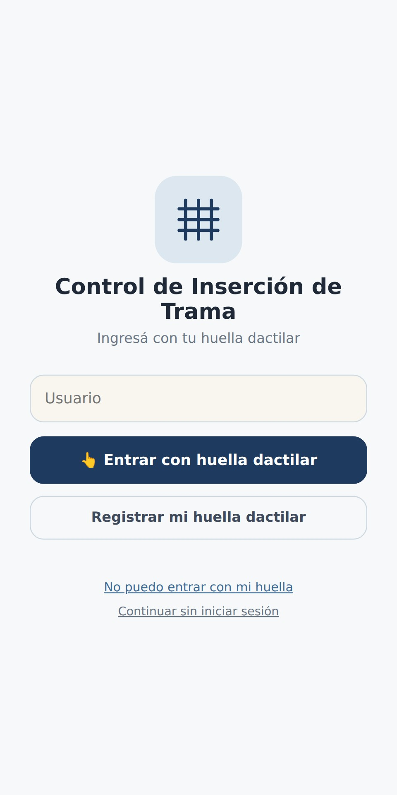
2.1. Ingresar con huella dactilar (usuario ya registrado)
- 1Escribir el nombre de usuario en el campo correspondiente.
- 2Tocar el botón "Entrar con huella dactilar".
- 3Cuando el dispositivo lo solicite, apoyar el dedo en el lector de huella para confirmar la identidad.
- 4Si la huella coincide con la registrada para ese usuario, la aplicación abre la pantalla de Inicio directamente.
2.2. Registrar la huella dactilar por primera vez
Este paso se hace una sola vez por usuario, la primera vez que esa persona va a usar el sistema.
- 1Escribir el nombre de usuario elegido.
- 2Tocar el botón "Registrar mi huella dactilar".
- 3Confirmar mediante el lector de huella del dispositivo.
- 4La aplicación muestra en pantalla un código de recuperación, compuesto por letras y números. Este código:
- Es fijo: no cambia con el tiempo.
- Es la única forma de recuperar el acceso a la cuenta si el día de mañana la huella no puede leerse (por ejemplo, cambio de dispositivo, lector dañado, o el usuario ya no coincide con la huella registrada).
- Se muestra una sola vez en este paso. Es responsabilidad de quien se registra anotarlo o guardarlo antes de continuar. Existe un botón "Copiar código" para copiarlo directamente.
- Puede consultarse nuevamente más adelante desde la sección de perfil del usuario, para quien necesite volver a verlo.
- 5Una vez guardado el código, tocar "Ya lo anoté, entrar" para ingresar a la aplicación.
Cuando ya se registraron los primeros tres usuarios del sistema, el registro libre se cierra automáticamente por seguridad. A partir del cuarto usuario en adelante, quien quiera registrarse necesita autorización de alguien que ya tenga acceso al sistema. Esto no es una jerarquía fija de un único administrador: cualquier usuario que ya haya sido autorizado a entrar, sin importar si fue de los primeros tres o si entró después con autorización, puede a su vez autorizar a una persona nueva. En la práctica, esto se resuelve con un código de invitación: la persona que ya tiene acceso se lo pasa a la persona nueva, y esta lo escribe en la pantalla de registro para poder crear su cuenta. Sin ese código, un usuario nuevo no puede registrarse por sí solo.
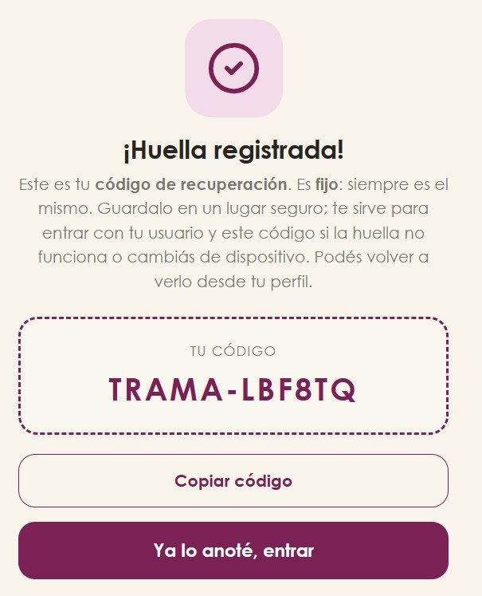
2.3. No se puede ingresar con la huella (recupero de acceso)
Esta opción se usa cuando la huella dactilar no funciona o no está disponible.
- 1Tocar "No puedo entrar con mi huella".
- 2Escribir el nombre de usuario.
- 3Escribir el código de recuperación que se guardó en el paso 2.2 al momento del registro.
- 4Tocar "Entrar".
Si el usuario no conserva su código de recuperación, no va a poder recuperar el acceso por este medio; en ese caso, tiene que gestionar el acceso con quien administre el sistema.
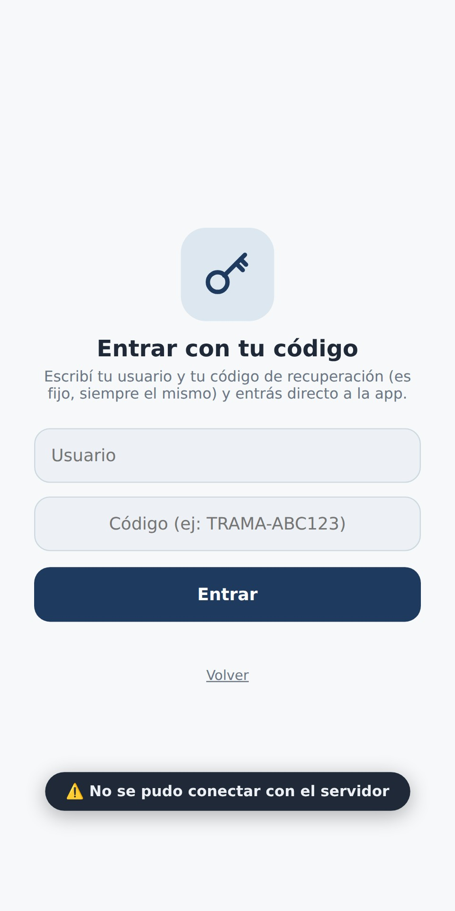
3Pantalla de Inicio
Es la primera pantalla que se ve al ingresar a la aplicación (una vez resuelto el inicio de sesión). Desde acá se accede al resto de las funciones y se ve información general del sistema.
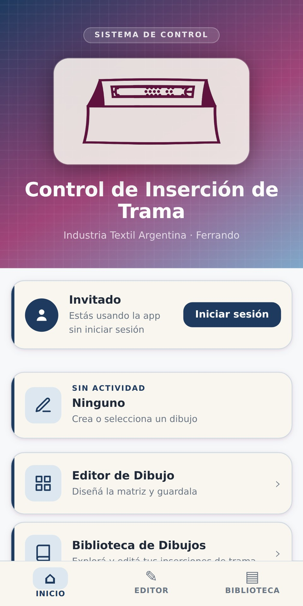
3.1. Información de sesión
En la parte superior se muestra el usuario que inició sesión, junto con un botón Salir para cerrar la sesión.
3.2. Dibujo actual
Se informa cuál es el dibujo que está cargado en este momento en el sistema, es decir, el que está asignado al telar para tejer o que se está tejiendo actualmente. Si todavía no se asignó ningún dibujo, el campo indica "Ninguno".
3.3. Accesos directos
Desde esta pantalla se accede a las otras dos secciones de la aplicación:
- Editor de Dibujo: lleva a la pantalla donde se diseña, se edita y se ejecuta la matriz del telar. Se explica en el punto 4.
- Biblioteca de Dibujos: lleva al listado completo de todos los dibujos guardados hasta el momento. Se explica en el punto 5.
3.4. Modo oscuro
Un interruptor permite alternar entre el tema visual claro y el oscuro de la aplicación, según la preferencia de quien la esté usando. Este ajuste no afecta ninguna función del sistema, es solamente una cuestión de visualización.
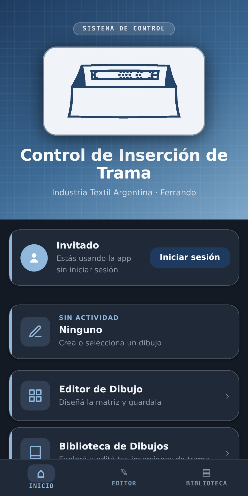
4Pantalla Editor de Dibujo
Es la pantalla donde se crea, se edita y se ejecuta la matriz (el "dibujo") que el telar va a tejer. Es la pantalla central de la aplicación.
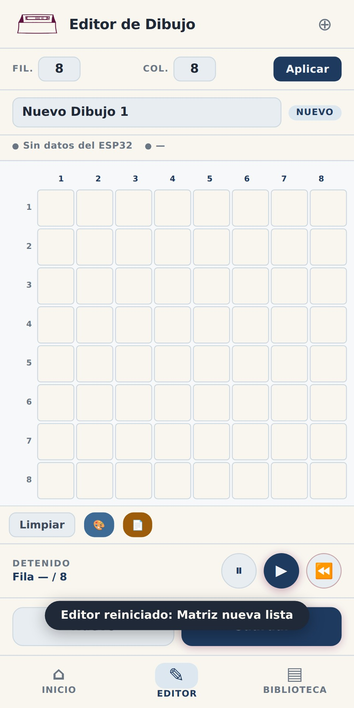
4.1. Definir el tamaño de la matriz
- 1En los campos correspondientes, escribir la cantidad de filas ("Fil.") y de columnas ("Col.") que va a tener la matriz. El sistema admite un mínimo de 2 y un máximo de 32 en cada dimensión.
- 2Tocar "Aplicar" para que el cambio de tamaño se refleje en la grilla.
Si se ingresa un número fuera del rango permitido, el sistema avisa mediante un mensaje y ajusta automáticamente el valor al límite permitido más cercano (por ejemplo, si se ingresa un número mayor a 32, lo deja en 32).
4.2. Nombrar el dibujo
En el campo de texto ubicado sobre la grilla se escribe el nombre con el que va a identificarse el dibujo dentro del sistema. Este nombre es el que después va a aparecer listado en la Biblioteca de Dibujos.
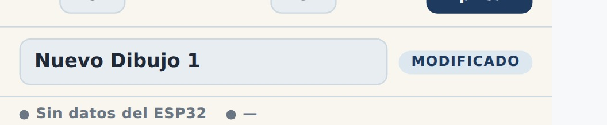
4.3. Estado real del telar
Debajo del nombre del dibujo hay una barra que muestra el estado real del telar, tomado directamente de la base de datos y del equipo de control físico (no es una simulación). Tiene dos indicadores:
Conexión del equipo de control (ESP32):
- Conectado (indicador verde): el equipo de control envió una señal de confirmación (heartbeat) hace menos de 8 segundos. Esto significa que el equipo está encendido, conectado a la red y funcionando con normalidad.
- Sin conexión, hace X segundos (indicador ámbar): el equipo de control dejó de enviar señales de confirmación. Puede deberse a que está apagado, desconectado de la red, o tiene algún problema de funcionamiento.
- Sin datos del equipo (indicador gris): todavía no llegó ninguna señal de confirmación desde que se creó el registro del telar en el sistema, o el firmware instalado en el equipo es una versión anterior que no envía esta información.
Estado de tejido:
Indica si el telar está Tejiendo, Pausado, Detenido o en Error. Este dato proviene directamente de la base de datos del sistema, actualizada por las acciones reales que se ejecutan (ver el punto 4.6), y no de la animación que se ve en pantalla.
Es fundamental entender la diferencia entre lo que se ve en la animación de la grilla y lo que efectivamente hace la máquina física.
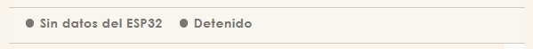
4.4. Dibujar la matriz
- Tocar una celda de la grilla la activa o la desactiva.
- Al activar una celda, se puede indicar además la cantidad de pasadas (repeticiones) que corresponden a esa posición del dibujo.
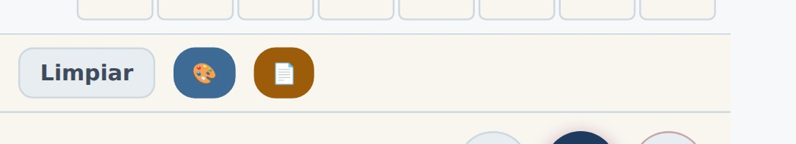
4.5. Herramientas del editor
- Limpiar: borra por completo el contenido de la grilla (todas las celdas activadas vuelven a su estado inicial). El sistema pide confirmación antes de ejecutar esta acción, porque no se puede deshacer.
- Simulador de color: permite asignar un color de hilo a toda la matriz, o a una fila puntual, con el fin de visualizar de forma aproximada cómo se va a ver el tejido resultante. Esto es solamente una ayuda visual dentro de la aplicación; no envía ninguna instrucción al telar físico ni influye en la ejecución del tejido.
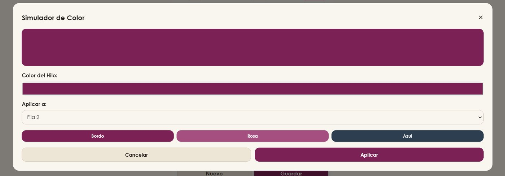
- Descargar ficha técnica: genera un archivo PDF con el detalle del dibujo actual, para poder imprimirlo o archivarlo como referencia.
4.6. Controlar la ejecución del tejido: qué hace cada botón realmente
Esta es la sección más importante del manual, porque hay una diferencia real entre lo que cada botón parece hacer por su nombre y lo que efectivamente ejecuta hoy en el sistema. Se detalla a continuación el comportamiento exacto de cada uno, tal como está construido actualmente.
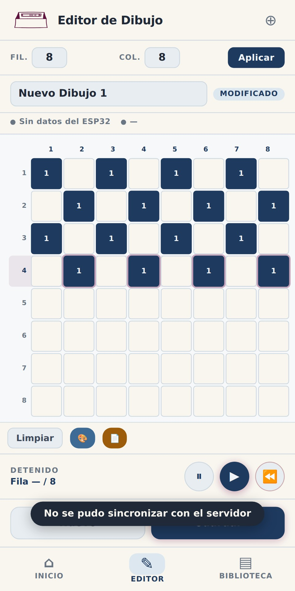
Iniciar (▶):
- Si el dibujo que está cargado en el editor es distinto al que estaba asignado previamente al telar, el sistema asigna este nuevo dibujo, reinicia la posición de tejido al principio (fila 1, columna 1) y actualiza el estado real del telar a "Tejiendo" en la base de datos. Este cambio de estado es detectado por el equipo de control (ESP32), que a su vez acciona el relé conectado en paralelo al botón físico de Marcha del telar, arrancando la máquina real.
- Si el dibujo que está cargado en el editor es el mismo que ya estaba asignado al telar, el sistema no reinicia la posición ni envía una nueva orden de arranque: simplemente retoma la animación en pantalla desde la posición en la que se encontraba.
Pausa ():
- El botón "Detener" fue eliminado de la interfaz: su función la cumple ahora el botón Pausa, que es el único botón real de parada. La función es detener la máquina real. Así es como tiene que funcionar: al tocarlo, el sistema actualiza el estado real del telar en la base de datos, cerrando el registro de producción en curso y llevando el estado a "Detenido". Ese cambio es detectado por el equipo de control, que acciona el relé conectado en paralelo al botón físico de Pausa del telar, deteniendo la máquina real.
- Hoy, tal como está construido, todavía no hace esto: solo pausa la animación que se ve en la pantalla del navegador, sin enviar ninguna orden al backend ni al equipo de control, por lo que el telar físico sigue tejiendo con normalidad aunque en la pantalla la animación esté detenida. Esto queda marcado como tarea pendiente de desarrollo (ver punto 7). Mientras esta corrección no esté hecha, quien use el sistema tiene que saber que pausar en la pantalla no equivale a pausar la máquina.
- Esta implementación (que Pausa accione de verdad el relé del equipo de control) se hace recién cuando se esté trabajando con el hardware conectado al telar real, no antes. Hasta ese momento, no tiene sentido activarla porque no hay equipo físico que responda a esa orden.
- Una consecuencia importante, una vez que Pausa haga la parada real: si después de pausar se quiere retomar el tejido, hay que volver a tocar Iniciar. Como el dibujo queda desasignado al pausar, el sistema lo va a tratar como una asignación nueva: la posición vuelve a empezar desde el principio del dibujo (fila 1, columna 1), no continúa desde el punto exacto en el que se dejó. Esto es así porque, en la etapa actual del proyecto, el sistema controla el arranque y la parada de la máquina, pero todavía no la posición exacta de tejido dentro del mecanismo físico.
- Sobre continuar el tejido exactamente desde la fila donde se dejó: no hace falta que el sistema lo resuelva por software. Eso se maneja directamente en la máquina física con el botón Retroceder de la botonera: es el que permite volver a la posición correcta antes de retomar, por ejemplo después de un hilo cortado, para que el patrón no quede mal. Por eso no importa que la posición vuelva a fila 1 al reasignar el patrón con Iniciar: la posición real de tejido la termina de ajustar el operario con Retroceder en la máquina, no la web.
Retroceder telar (⏪):
- Acciona el botón físico de Retroceder de la botonera del telar, a través de un relé del ESP32: mueve el mecanismo real de la máquina, no solo la posición registrada en el sistema. Por eso pide confirmación antes de ejecutarse. Se usa para corregir la posición tras un corte de hilo. (El botón anterior "Retroceder fila (↩)", que solo movía el contador en pantalla sin tocar la máquina, se eliminó: no tenía uso real y se prestaba a confusión con este.)
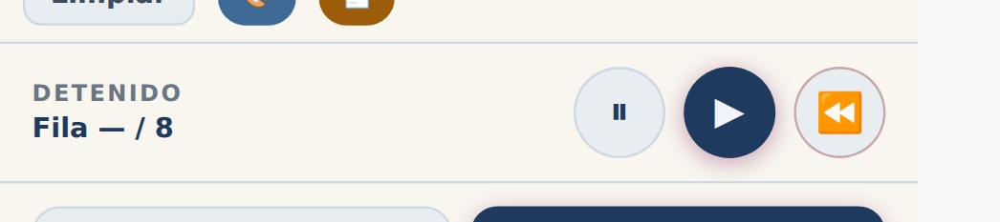
Indicador "Posición incierta":
- Aparece en la barra de estado del editor cuando el ESP32 detecta que alguien usó a mano los botones Avanzar o Impulso del telar. Esos dos botones no se controlan desde la web (siguen siendo manuales), pero sí se sensan: como el sensor de pasada no distingue en qué sentido se movió la máquina, un uso manual puede desincronizar la posición registrada. El aviso queda visible hasta que alguien mira el telar, verifica dónde está parado realmente y toca "Confirmar".
Mientras el telar está en ejecución (Tejiendo), la matriz queda bloqueada para edición: no pueden modificarse el tamaño, los colores ni las pasadas hasta detener el tejido.
4.7. Guardar y crear dibujos
- Nuevo: descarta el dibujo que está actualmente en el editor y abre uno en blanco. Si el dibujo actual tiene cambios sin guardar, el sistema pide confirmación antes de descartarlos.
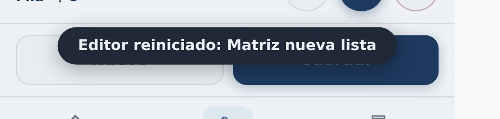
- Guardar: guarda el dibujo actual, con el nombre asignado, en la Biblioteca de Dibujos, para que quede disponible para su uso posterior.
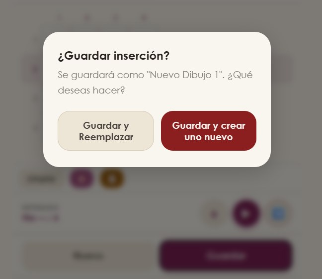
5Pantalla Biblioteca de Dibujos
En esta pantalla se listan todos los dibujos guardados hasta el momento en el sistema.
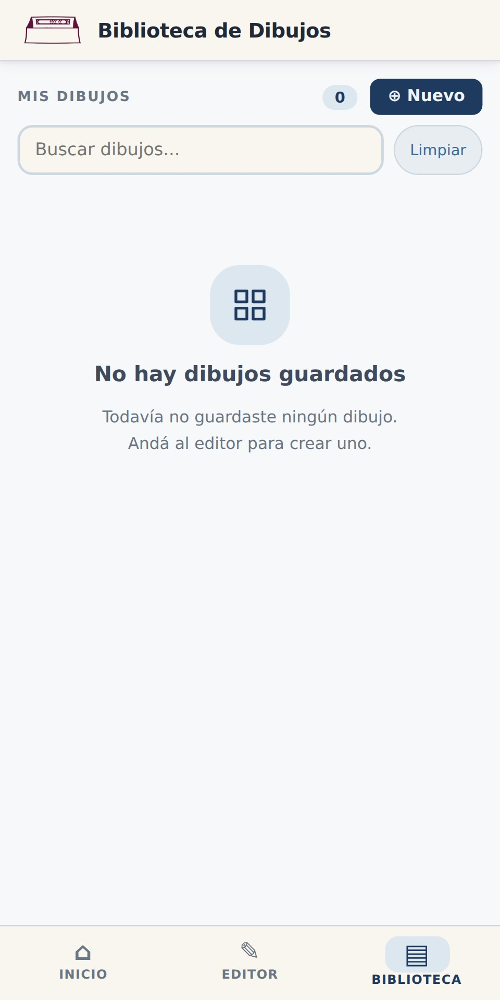
- 1En la parte superior se muestra la cantidad total de dibujos guardados.
- 2Se puede buscar un dibujo puntual escribiendo su nombre en la barra de búsqueda. El listado se filtra automáticamente a medida que se escribe.
- 3El botón "Limpiar" borra el texto de búsqueda y vuelve a mostrar el listado completo.
- 4El botón "Nuevo" lleva directamente a la pantalla del Editor con un dibujo en blanco, para crear uno nuevo.
- 5Al tocar un dibujo de la lista se accede a las opciones de editarlo (lo abre en el Editor) o eliminarlo de forma definitiva.
- 6Si todavía no hay ningún dibujo guardado, la pantalla muestra un mensaje indicando que hay que crear el primero desde el Editor.
6Sobre los usuarios del sistema
El sistema no tiene distintos niveles de permiso entre usuarios: todo usuario que inicia sesión tiene acceso a las mismas funciones (crear, editar y eliminar dibujos, e iniciar o detener el tejido). No existe hoy una distinción entre, por ejemplo, un perfil de operario y uno de supervisor.
El único control de acceso que existe es el que se explicó en el punto 2.2: los primeros tres usuarios pueden registrarse libremente, y a partir del cuarto en adelante hace falta que alguien que ya tenga una cuenta le dé un código de invitación a la persona nueva. Esa capacidad de dar acceso no queda reservada solo para los primeros tres: se traspasa a cada usuario nuevo que se registra con autorización, así que cualquiera que ya esté adentro puede dejar entrar a otro. Esto es exclusivamente una medida para evitar registros no autorizados, no una jerarquía de permisos dentro del sistema.
7Pendientes para la versión final del manual
Fin del contenido del Manual 1 (página web). El Manual 2, sobre el uso del telar físico en la fábrica y la modificación incorporada, se desarrolla por separado.
Guía de inicio rápido
La pantalla de inicio muestra si el telar está tejiendo, pausado o detenido. Ese estado refleja la máquina real, incluso si alguien usó la botonera.
Desde la Biblioteca, elegir el dibujo que corresponde a la pieza y asignarlo al telar.
Tocar el botón de Marcha en la aplicación, o el botón Avviamento de la botonera. Las dos formas funcionan.
Pausa detiene la máquina conservando la posición. Retroceder mueve una pasada hacia atrás, para corregir tras una rotura de hilo.
- El telar puede operarse enteramente a mano, como siempre. El sistema es un agregado, no un reemplazo.
- El dibujo lo sigue definiendo la cinta de papel perforada. El control del dibujo desde la aplicación corresponde al Nivel 2, que todavía no está instalado.
- Ante cualquier comportamiento raro, la botonera física tiene prioridad: detener con Stop y avisar al equipo.
Guía de inicio rápido del hardware
Con el telar encendido, medir la tensión en los bornes de un botón con el multímetro en alterna, apretando y soltando.
Con el gabinete enchufado pero el microcontrolador desconectado, medir la salida de la fuente: tiene que estar entre 4,75 y 5,25 V.
Empezar por Marcha. Llevar su par de hilos desde la botonera hasta el gabinete y conectarlo al relé y al sensado.
Reiniciar el microcontrolador con el telar encendido y verificar que ningún relé cierre durante el arranque.
- Nunca conectar el microcontrolador sin haber verificado la salida de la fuente.
- Los conectores tipo dupont no van del lado de los 220 V: solo empalmes con termocontraíble.
- El cable de señal no debe correr pegado y en paralelo al cable del motor. Si se cruzan, en ángulo recto.
Cómo se usa el telar en la planta y cómo funciona con la modificación que se le agregó: control remoto de arranque y parada desde la aplicación, con la previsión de comandar también el dibujo en una etapa posterior.
Alcance de este manual: las secciones sobre la máquina, la modificación y su uso están completas, con las fotos del relevamiento presencial del 19/08/2026. El Nivel 2, descrito en la sección 3.2, todavía no está instalado en la máquina.
1Introducción
El telar que estamos modificando es una máquina de tejido plano que hoy funciona de forma totalmente mecánica: se enciende y se para con una botonera física, y el patrón que teje lo define una cinta de papel perforada que se va leyendo mecánicamente mientras la máquina trabaja.
Lo que estamos agregando no cambia nada del funcionamiento original de la máquina. Se conecta en paralelo a los controles que ya existen, así que el telar se puede seguir usando exactamente igual que siempre, de forma manual, en cualquier momento.
2Qué telar es y cómo funciona
2.1. El sistema de tejido
Los telares que tejen con patrón (no tela lisa) necesitan definir, en cada pasada, qué hilos de la urdimbre suben y cuáles quedan abajo. Eso es lo que forma el dibujo en la tela. Hay dos formas típicas de resolver esto:
Jacquard hilo por hilo: cada hilo tiene su propio control individual, tradicionalmente con tarjetas perforadas (una tarjeta por pasada, con un agujero por cada hilo que hay que levantar). Permite patrones muy detallados, pero implica manejar cientos o miles de puntos de control.
Por marcos (dobby): en vez de controlar cada hilo por separado, se agrupan en una cantidad chica de marcos, y en cada pasada se decide qué marcos suben. Todos los hilos de un mismo marco se mueven juntos. Es mucho más simple porque trabaja con pocos puntos de control (8 en el caso de nuestra máquina), y alcanza perfectamente para patrones repetitivos.
Cuando inspeccionamos el telar de la planta confirmamos, por su placa de datos, que es un Vamatex modelo C 201 (matrícula 1104, año de revisión 1989). La lectura del patrón se hace con una cinta de papel angosta montada en un tambor con rueda dentada, que acciona una fila de palancas de selección. El máximo de matrices que la máquina puede ejecutar en simultáneo es 8. Con eso queda claro que es un telar por marcos (dobby), no un Jacquard hilo por hilo.
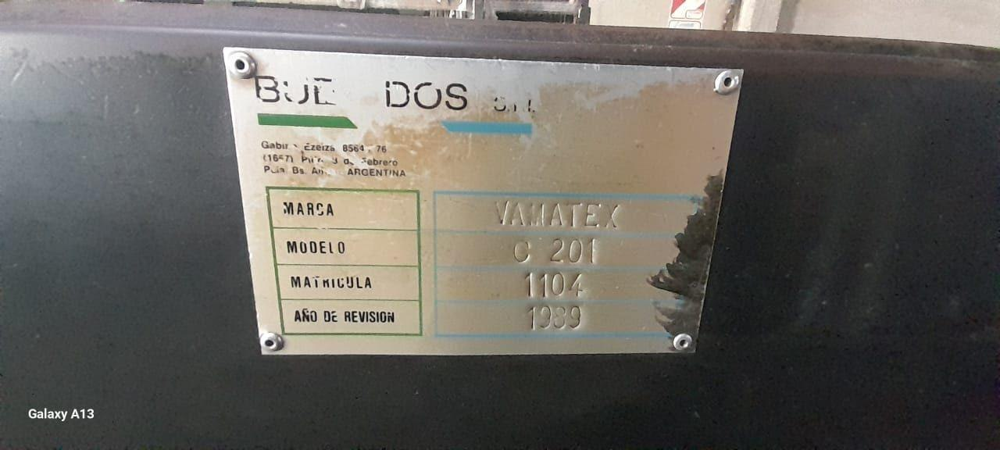
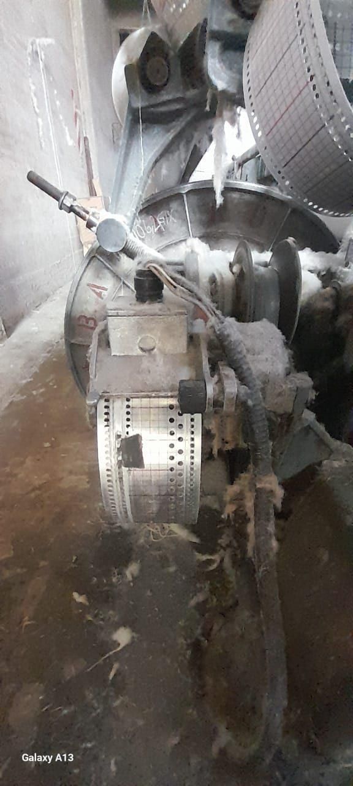
En criollo: es un telar de patrones, de la familia de los "Jacquard" en sentido amplio, pero con un mecanismo de lectura más simple, que trabaja por grupos de hilos en vez de hilo por hilo. Esto no es un detalle menor: es justamente lo que hace posible la modificación que estamos haciendo. Reemplazar la lectura de un puñado de marcos con electrónica es un proyecto que se puede hacer con lo que tenemos; reemplazar el control de cientos de hilos individuales no.
2.2. Dos funciones separadas en el telar
Para entender la modificación conviene separar el telar en dos partes que hoy trabajan por separado:
La parte que mueve la máquina. Es la que arranca, avanza, retrocede y para el telar. Se maneja con la botonera física, con los botones de Marcha, Retroceder y Pausa.
La parte que lee el patrón. Es la que decide, pasada por pasada, qué marcos suben para formar el dibujo. Hoy esto lo hace la cinta de papel perforada que describimos arriba (es mecánico, no tiene nada de electrónico).
3La modificación que le estamos haciendo al telar
3.1. Lo que ya está hecho (Nivel 1)
Lo primero que hicimos, y que ya está andando, actúa solo sobre la parte que mueve la máquina (punto 2.2, ítem 1). Es un ESP32 conectado en paralelo a los botones físicos de Marcha, Pausa y Retroceder, mediante tres relés.
Con esto, desde la página web (ver el otro manual) se puede:
Poner en marcha el telar sin estar parado frente a la botonera.
Detenerlo de la misma forma, a distancia (botón Pausa).
Ver reflejado en la web lo que se hace desde la botonera: si un operario aprieta Marcha, Pausa o Retroceder en la máquina, el ESP32 lo detecta y la página se actualiza sola.
Algo importante: este agregado no reemplaza la botonera, ni toca ninguna otra parte de la máquina. Lo único que hace es "apretar" los mismos botones que apretaría un operario, pero desde otro lado. Por eso la botonera física sigue funcionando siempre igual que antes, de forma totalmente independiente del sistema electrónico. Si el ESP32 se desconecta, se apaga o falla, el telar se sigue manejando con la botonera de toda la vida, sin ningún problema.
3.2. Lo que viene después (Nivel 2, todavía no está instalado)
El siguiente paso, ya pensado pero todavía no puesto en la máquina, es meternos también con la parte que lee el patrón (punto 2.2, ítem 2). La idea es reemplazar la lectura de la cinta de papel perforada comandando las bobinas de selección que el telar ya tiene instaladas, mediante relés de estado sólido manejados por el mismo ESP32, que a su vez recibiría el patrón desde la página web.
Esto todavía no funciona sobre el telar real: está en etapa de diseño, medición y prueba de banco. Vamos a actualizar este manual cuando esté instalado y probado en la máquina.
4Uso del telar, paso a paso
Esta sección describe el uso del telar paso a paso, con las partes identificadas en el relevamiento presencial del 19/08/2026.
4.1. Partes de la máquina
Marca y modelo: Vamatex C 201 (Italia), matrícula 1104, año de revisión 1989. En el mismo taller hay otra máquina distinta, un Vamatex Propeller C 401: no confundirlas.
Urdimbre: los hilos tensados verticalmente que forman la base del tejido.
Lizos y peine: separan y guían los hilos de la urdimbre.
Caja de selección de marcos: donde está la cinta perforada que hoy decide qué marcos suben en cada pasada (punto 2.1).
Botonera física: cinco pulsadores repartidos en dos tableros separados a lo largo de la máquina (ver 4.2).
ESP32 instalado en paralelo a la botonera (la modificación del punto 3.1).
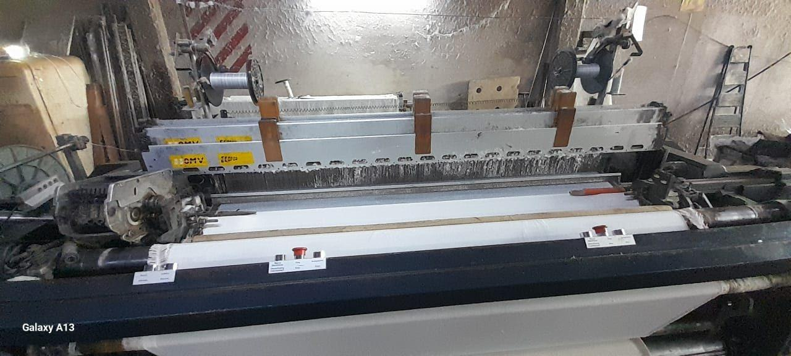
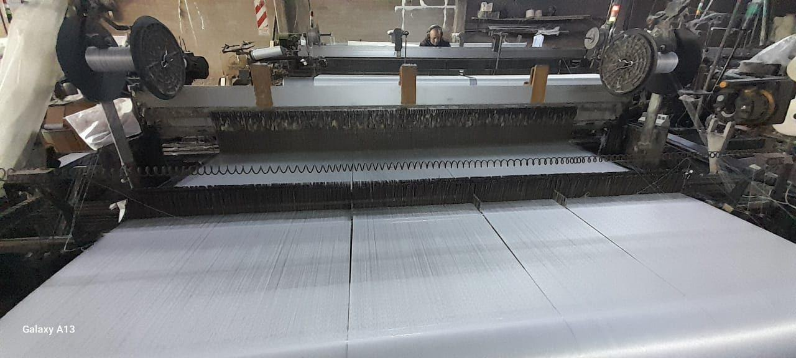
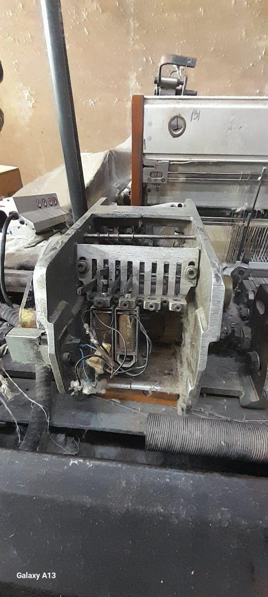
4.2. Puesta en marcha
La botonera de nuestro telar tiene cinco pulsadores, repartidos en dos tableros separados sobre la barra frontal de la máquina. Las etiquetas están en italiano e inglés, como vino de fábrica: • Tablero principal (tres botones): "Avviamento / Start" es Marcha; "Stop" es Pausa; y "Marcia Discontinua / Discontinuing Functionment" es el que llamamos Impulso, que mueve la máquina de a saltos en vez de en marcha continua. • Tablero secundario (dos botones): "Avanti / Advance" es Avanzar e "Indietro / Returne" es Retroceder. No es el panel completo con microprocesador de los modelos más nuevos de Vamatex (el manual oficial del fabricante, citado como referencia general, describe paneles con más botones y funciones): la nuestra es una versión más simple, de accionamiento directo.
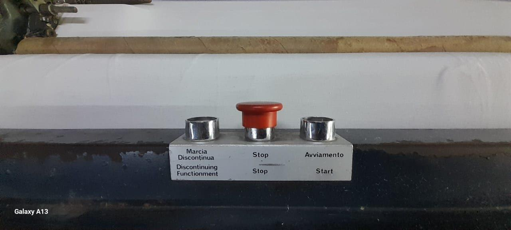
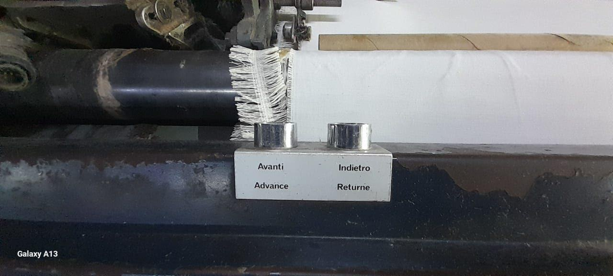
Antes de arrancar, se revisa que no haya nadie cerca de la zona de riesgo, que no queden herramientas u objetos sueltos sobre la máquina, y que las protecciones y tapas estén cerradas y en su lugar.
Para poner el telar a tejer, se aprieta el botón de Marcha. No hay ningún paso adicional puntual de nuestra máquina o de la modificación que agregamos: la revisión visual general (punto anterior) es lo único que se hace antes de arrancar.
El botón de Retroceder se usa cuando se corta el hilo: sirve para volver atrás y que el patrón no se eche a perder (si no se retrocede, el patrón del rollo termina distinto al pedido). Se explica en más detalle en el punto 4.5.
Una vez en marcha, conviene quedarse un momento verificando que no salga ningún ruido extraño. Si aparece algo raro, se para con el botón de Pausa (o desde la app, ver más abajo) y se busca la causa (ver punto 4.5).
4.3. Operación normal
Mientras el telar está tejiendo, el operario se encarga de:
Colocación de los rollos. Los rollos van en el portarrollos, en el lugar donde se conecta cualquier rollo en este tipo de telar (la zona de la urdimbre, ver punto 2.1).
Revisión. No hay un tiempo fijo establecido para revisar los rollos. El operario le va echando una mirada al telar cada tanto mientras está trabajando, y así controla que todo esté en orden.
Situaciones a vigilar. El telar es una máquina grande y hace ruido de forma normal mientras trabaja; eso no es una falla, es su funcionamiento habitual. Desde que está en marcha, no se registró ningún ruido fuera de lo normal ni ningún atasco. La única situación que efectivamente ocurre, y por la que se para el telar, es el hilo cortado, que pasa cada cierto tiempo. Se explica el procedimiento en el punto 4.5.
4.4. Detención y parada
Con nuestra botonera (Marcha, Retroceder, Pausa), el botón de Pausa es el que se usa para parar el telar, tanto al terminar la tarea como ante cualquier problema que surja mientras está tejiendo (hilo cortado, ruido raro, etc.). Confirmado con la máquina real: no hay ningún otro botón además de estos tres, así que no existe un botón de emergencia separado.
El manual oficial de Vamatex, como referencia general para esta familia de telares, describe además un botón de emergencia específico, de color rojo, pensado para cortar todo de forma inmediata ante un peligro real. Ya confirmamos con el dueño de la fábrica (visita del 19/08/2026) que el botón de Pausa (Stop) de nuestra máquina se usa en la práctica como una parada normal: no tiene mecanismo de enclavamiento ni procedimiento especial de rearme, y para retomar simplemente se aprieta Marcha de nuevo. No cumple, entonces, la función de un botón de emergencia con corte inmediato (si en algún momento se necesita esa función, habría que agregar un mecanismo aparte).
Sea cual sea el motivo de la parada, antes de volver a arrancar conviene asegurarse de que el problema que la originó ya esté resuelto.
4.5. Situaciones de error o emergencia
El único caso por el que se para el telar es el hilo cortado. El procedimiento es el siguiente:
El operario detiene el telar desde la aplicación (la web, ver el manual de la página web, punto 4.6).
Saca el hilo cortado.
Si todavía queda hilo en el rollo, toma el hilo del mismo rollo y lo prepara de nuevo, dejándolo listo para retomar.
Usa el botón de Retroceder para volver el telar a una posición anterior antes de arrancar de nuevo. Esto es importante: si no se retrocede, el patrón que se está tejiendo queda mal (no coincide con el patrón pedido).
Una vez retrocedido y con el hilo preparado, se arranca de nuevo con Marcha.
Sobre el ruido de la máquina: al ser un telar grande, hace ruido de forma normal mientras trabaja, y eso no es motivo de alarma. No se registraron ruidos fuera de lo normal desde que está en marcha, así que no hay, por ahora, un procedimiento aparte para eso. Del mismo modo, no se registraron atascos.
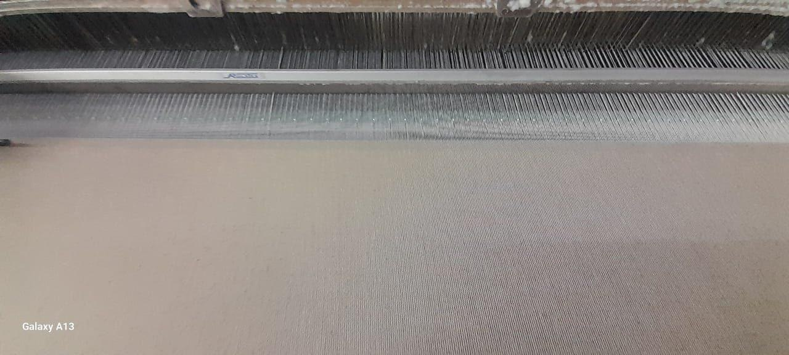
Como criterio general de seguridad (esto es válido más allá de los casos puntuales de arriba): nunca hay que tocar partes en movimiento del telar, ni sacar ninguna protección o tapa, mientras la máquina está funcionando. Cualquier intervención manual se hace con el telar parado.
Nuestro telar, al tener el sistema de arranque y parada remotos por el ESP32, agrega una posibilidad más: se puede detener la máquina también desde la página web (ver el manual de la página web, punto 4.6), sin tener que estar físicamente al lado de la botonera. Como se explicó en el punto 4.4, Pausa es el botón que usamos hoy para parar la máquina en cualquier circunstancia; si además cumple la función de un botón de emergencia es algo que todavía estamos revisando (ver punto 5).
5Puntos pendientes
Queda por definir cómo se comporta exactamente el botón de Retroceder al accionarlo: si la máquina retrocede de forma continua mientras se lo mantiene apretado, o si un toque produce un movimiento fijo. Es un dato que hay que observar en la máquina en marcha, y de él depende cómo se configura el botón equivalente de la página web.
Con esto, el punto 4 (uso paso a paso del telar) queda desarrollado en su totalidad, salvo ese punto pendiente.
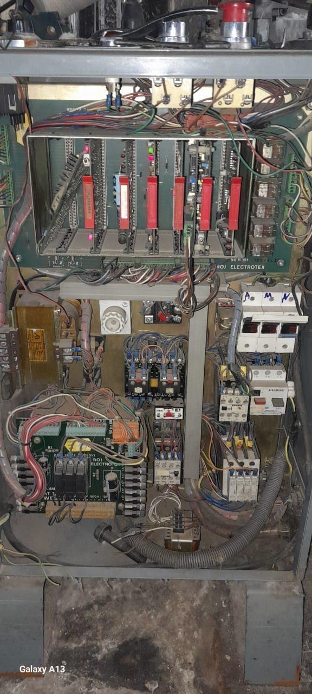
Fin del contenido actual. Se va completando a medida que definamos lo que falta.
Evaluación de Proyectos · 7mo Informática 2026 · Instituto Leonardo Murialdo.
Prof. Pedaci, Lourdes